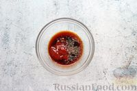

1.
Подготовьте все необходимые ингредиенты.
Куриную грудку промойте и обсушите.
Включите духовку для разогрева до 180 градусов.
2. Чёрный перец и гвоздику разомните пестиком.
В миске соедините кетчуп, соевый соус и измельчённые пряности. Перемешайте.

3.
Куриное филе разрежьте вдоль на две части. Каждую часть филе положите на плёнку, накройте другой плёнкой и отбейте. При желании
куриное мясо можно посолить и поперчить.
4.
Плавленый сыр разрежьте на четыре части. Положите по одной части сыра на каждую отбивную (ближе к одному краю).
5.
Помогая себе плёнкой, сверните куриное мясо в плотный рулет, начиная от края с копчёным сыром.
6. Каждый куриный рулетик полностью оберните полосками бекона. Если не получится обернуть одной полоской, добавьте следующую. Количество
бекона будет зависеть от длины и ширины полосок.
7. В форму для запекания плотно уложите рулетики в беконе.
8.
Залейте куриные рулетики с беконом и копчёным сыром подготовленным соусом из кетчупа и соевого соуса.
9.
Поставьте форму с рулетиками в разогретую духовку и запекайте при температуре 180 градусов в течение 25-30 минут.
10.
Куриные рулетики с беконом и копчёным сыром готовы – подавайте к столу.
11.
Приятного аппетита!!!